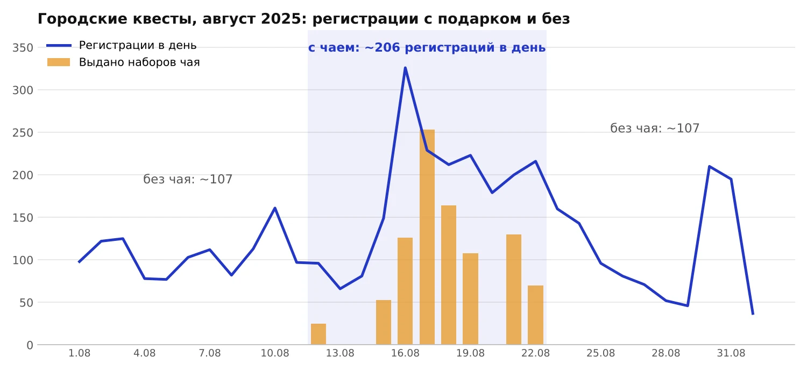
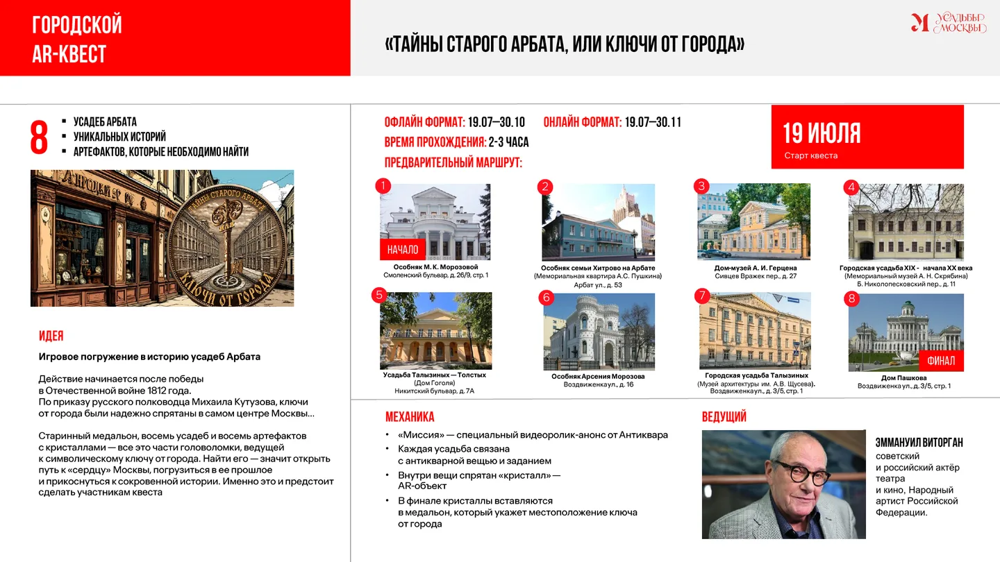
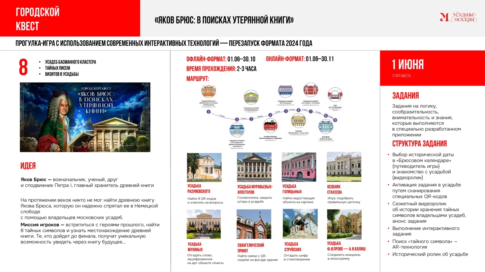

AR-квесты «Городские квесты»: 12 500+ регистраций, около 7 500 прохождений
В рамках фестиваля «Усадьбы Москвы» мы сделали три городских AR-квеста: по Арбату, Хамовникам и Басманному району. В проекте участвовали 24 усадьбы, каждую из которых мы интегрировали в интерактивную головоломку с участием Арсения Попова и Эммануила Виторгана. Проект был нацелен на привлечение офлайн трафика в усадьбы. Я придумывал головоломки на основе исторических фактов об усадьбах, правил сценарий, собирал путь игрока, собирал обратную связь игроков и готовил отчёты.
Несмотря на неполадки с геолокацией в центре Москвы, мы собрали более 12 500 регистраций, около 7 500 дошли до конца офлайн или онлайн. Благодаря отлаженному пайплайну отчётности я заметил, что регистрации сильно стимулировало добавление чая Москва – в день его интеграции их стало почти вдвое больше: 206 вместо 107. Оперативно собрав отчёт для руководства, я защитил увеличение бюджета на призы и увеличил регистрации в 2 раза в сравнении с прошлым периодом.
- Регистрации и прохождения взяты из административной панели веб-приложения квестов: Арбат: 2 070 офлайн, 274 онлайн. Хамовники: 2 841 офлайн, 463 онлайн. Басманный: 1 443 офлайн, 428 онлайн.
- Подарки: 12–22 августа 2025 к призам добавили 1 000 наборов «Московского чаепития». С чаем было около 206 регистраций в день, без него около 107. Когда наборы закончились, регистрации упали обратно.
- По этой аналитике согласовали новые поставки: 500 наборов в начале сентября и по 1 000 каждую неделю до 27 октября.
- Придумывал головоломки и сам их тестировал.
- Вычитывал и правил сценарий, чтобы он был логичным и без натяжек.
- Давал ТЗ на съёмки, в том числе с Арсением Поповым и Эммануилом Виторганом, и отсматривал видео.
- Сделал UX/UI и тексты всего пути игрока, от рекламного креатива до получения подарка.
- Заполнял брифы для медиаподдержки.
- Организовал выдачу подарочных комплектов: доставка, отчётность, работа с туристическими центрами.
- Собирал данные по выдаче подарков и регистрациям. По ним сделали аналитику, и под неё дали дополнительный бюджет на призы.
- Поддерживал игроков на лендинге: ответы на вопросы и работа с негативом.
- Разрабатывал дизайн полиграфии.
- Согласовывал всё с усадьбами.
Экраны




Хотите обсудить роль?
Написать в Telegram